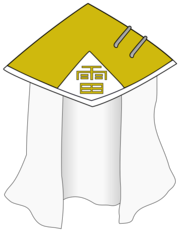

O Raikage< (雷影; Literalmente significa: Sombra do Relâmpago) é o Kage de Kumogakure. Houveram cinco Raikage até agora na história da vila e são geralmente conhecidos como os shinobi mais fortes na aldeia.
A posição Raikage foi criada logo após a formação de Kumogakure por A, o fundador da aldeia, sendo no anime o segundo dos Cinco Kage a surgir.[1] A maneira pela qual um Raikage é escolhido não é clara; o Segundo fora nomeado por seu longo serviço e dedicação como guarda-costas do Primeiro[2] e após a morte do Terceiro, seu filho automaticamente se tornou seu sucessor, uma decisão tomada muitos anos antes.[3] Geralmente, o Raikage é conhecido por seu forte desejo de proteger a aldeia e seus habitantes bem como por seu orgulho.
Ao longo da história de Kumogakure, cada um dos primeiros quatro Raikage tiveram o nome A (エー, Ē; TV Brasileira "Ay") e, aparentemente, como tradição, sempre tiveram um parceiro de dupla, que além de trazer o poder do Raikage à tona, o defende também, sendo a este dado o nome de B (ビー, Bī).[4] O Raikage trabalha dentro de uma estrutura central azul em Kumogakure e tem o kanji para Relâmpago (雷, kaminari) na frente.
A (エー, Ē; TV Brasileira "Ay") foi o Primeiro Raikage (初代雷影, Shodai Raikage; Literalmente significa "Fundador ou Primeira Sombra do Relâmpago") que fundou Kumogakure no País do Relâmpago.
A (エー, Ē; TV Brasileira "Ay") foi o Segundo Raikage (二代目雷影, Nidaime Raikage; Literalmente significa "Segunda Sombra do Relâmpago") de Kumogakure.
A (エー, Ē; TV Brasileira "Ay") foi o Terceiro Raikage (三代目雷影, Sandaime Raikage; Literalmente significa "Terceira Sombra do Relâmpago") de Kumogakure, conhecido como o maior Raikage que a vila já teve.
A (エー, Ē; Viz "Ei", TV Brasileira "Ay") foi o Quarto Raikage (四代目雷影, Yondaime Raikage; Literalmente significa "Quarta Sombra do Relâmpago")[6] de Kumogakure.
Darui (ダルイ, Darui) é o Quinto Raikage (五代目雷影, Godaime Raikage; Literalmente significa"Quinta Sombra do Relâmpago") de Kumogakure.[7] Antes de se tornar Raikage, ele atuou como o braço direito do Quarto Raikage.